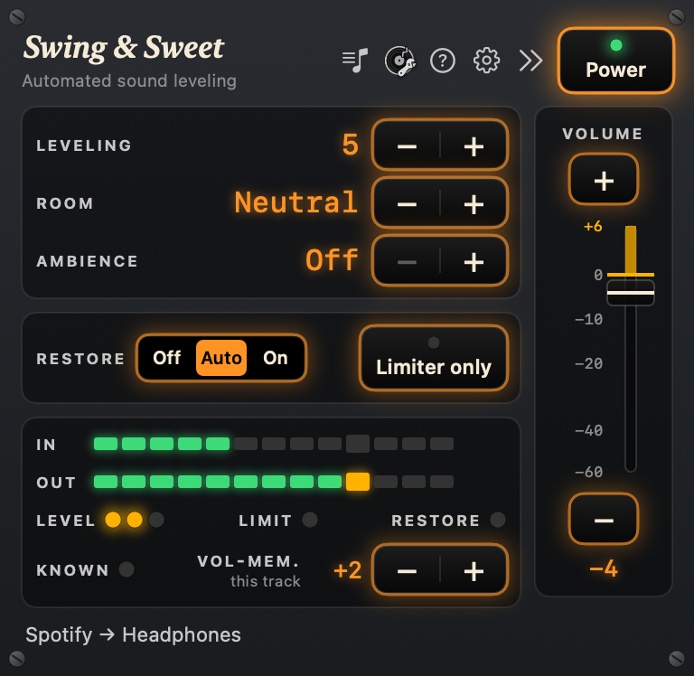
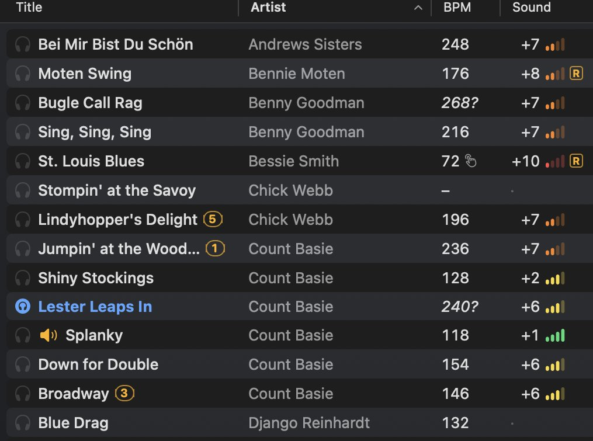
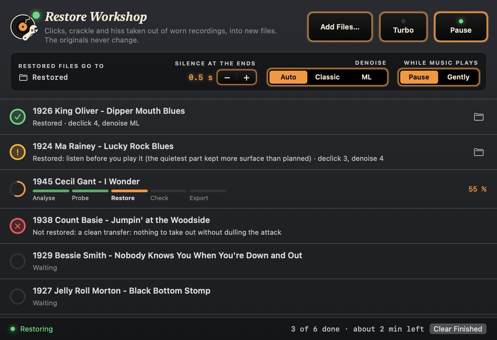

One knob for how firmly
Leveling on the front panel goes from Soft, which keeps more of the difference between a quiet trio and a big band, to Strict, which lifts quiet passages more.
For swing and blues DJs, dance teachers and jazz lovers · Mac
Swing & Sweet sits between your music app and the PA and makes every track right for the dance floor: one level from track to track, quiet solos lifted, harsh brass tamed, worn 78s cleaned up. Set the mixer once and watch the dancers, not the fader.
Public beta on TestFlight · coming to the Mac App Store

Who it's for
Set the mixer once and keep your mind on the floor and the next track, from the first tune to the last.
Press play and teach. The next track will not blast or vanish, so you stay with the class instead of walking back to the volume.
1920s 78s, swing-era big bands and modern remasters at one comfortable level, on your speakers, your Sonos or your headphones.
How it works
Swing & Sweet is not another music app. Your music app plays as it always does; Swing & Sweet takes its sound, works on it and passes it on to the PA. No drivers, no cables between apps: choose the app and press Power.
Pause, skip and seek in Spotify, Music and the built-in player reach the room within about half a second; other apps after about 2.5 s. Out to the headphone jack and your mixer, a USB interface, or AirPlay and Sonos at home.
Playing music in public needs the right licences: the streaming service's terms and the venue's licences are the DJ's or organiser's to check.
Leveling
A 1925 Bessie Smith 78 and a modern remaster can sit 10 dB apart. Volume normalization (ReplayGain, Sound Check) gives each track one setting and stops there. Swing & Sweet evens out the tracks, and then keeps working inside each one while it plays.
Quiet transfers get lost on the floor, loud remasters blast, harsh horns cut through the room.
One mixer setting holds from a 1925 transfer to a 2019 remaster.
A soft piano solo or a muted trumpet is lifted while it plays, so it is not lost under the shoes and the chatter.
A shout chorus or screaming brass is brought down to the rest of the track, so it never hits the room like a wall.
Breaks and stop-time are never lifted, so the dancers still hit them. Only the extremes are evened out.
Leveling on the front panel goes from Soft, which keeps more of the difference between a quiet trio and a big band, to Strict, which lifts quiet passages more.
Restore
Clicks, crackle and hiss taken down: live while you play, or as new copies of your worst records.

Each worn recording gets only as much cleaning as it needs; clean ones are left alone. A worn track is never let go halfway: on a dance floor, crackle coming back is worse than a little cleaning.

Drop in worn recordings or a whole folder. The workshop restores them in the background and saves each as a new Apple Lossless file. Your originals never change.
The Friars Society Orchestra (the New Orleans Rhythm Kings) on a worn Gennett 78. The same 22 seconds before and after the Restore Workshop. Switch while it plays.
Before: the disc as it plays, transferred flat by the Great 78 Project (Internet Archive). After: the workshop's finished copy at its default settings. Both at the same loudness. The recording (1922) and the tune (William H. Tyers, 1911) are in the public domain.
Room and track
Two controls a DJ reaches for, both kept apart from the master Volume.

ReplayGain, Sound Check and the streaming apps' normalization give each track one volume setting. Swing & Sweet does that too, and then works on the music while it plays.
| ReplayGain and the like | Swing & Sweet | |
|---|---|---|
| The same loudness from track to track | ✓ | ✓ |
| Inside each trackquiet solos lifted, loud choruses held back, breaks left alone | — | ✓ |
| Harsh brass and hard drumssoftened only while they are hard on the ears | — | ✓ |
| Worn 78sclicks, crackle and hiss taken down | — | ✓ |
| Peaks safe for the PA | partly | ✓ |
| Every source the same waySpotify, Music, a browser or your own files, no scan first | — | ✓ |
| Fit the sound to the roomone knob, set once for the venue | manual EQ | ✓ |
| A little space for dry recordings | DJ effects only | ✓ |
The built-in player
A DJ player made for social dancing: no decks, no mixing. The next three tracks, the time left and your headphones. Every file gets the same sound and starts at once, and the pause between tracks is the same every time, counted from the music. Search, tags, BPM filters and playlists; your files are never changed.

The three next tracks, when the set ends, and its tempo curve. Gentle marks for the same artist twice or a jump in tempo.
Hear any track in Bluetooth or USB headphones while the room plays on, at about the level the room will give it.
Tempo counted the way swing DJs count. TAP to correct it, and it learns your music.
Any track from 70 to 110 % of its tempo with the pitch kept, to teach a step at an easier speed.
Built for a live floor
If the app stops or hangs, your music app plays on, unprocessed, on the same output.
While it runs, the Mac's alert sounds move to the built-in speakers, never to the dance floor.
Nothing is recorded or uploaded. No account, no analytics, no tracking. macOS still asks for System Audio Recording: Apple's name for any access to another app's sound, saved or not.
What's next
What is planned after launch, in the likely order. DJs' wishes can change it.
At launch
At launch, in the player
Next
Updated November 2026. Missing something you need at a dance? Tell me.
Price
14 days free
Everything working, from the first Power on. The trial never ends in the middle of a dance, and never turns into a purchase by itself.
Buy once
One purchase unlocks Swing & Sweet for good. No subscription, no account.
All your Macs
One purchase per Apple ID, on every Mac with Apple silicon and macOS 14.2 or later.
Swing & Sweet is in public beta. Install Apple's free TestFlight app on your Mac, open the link, and you have the latest build; it updates itself, and the 14-day trial works as it will in the store.
macOS 14.2 or later. Tell Christian what you hear on your floor: what works, what does not, and the records that still sound wrong.
Questions, or want to hear it at your next social? Write to Christian Melby Bjørn, who makes Swing & Sweet.